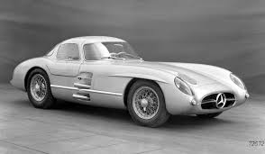

Продаж унікального спорткару Mercedes-Benz 300 SLR 1955 за 142 мільйони доларів встановив світовий рекорд - таким дорогим ще не було жодне авто. Рекордна ціна пояснюється тим, що такий Mercedes-Benz - єдиний у світі.
Про це повідомили у виданні Carscoops, пише finance.ua.
Тепер Mercedes-Benz 300 SLR 1955 року випуску став найдорожчим автомобілем в історії. Його попередник - Rolls-Royce Silver Ghost 1906 року, який свого часу продали за 75 мільйонів доларів.
Mercedes-Benz 300 SLR – гоночна версія знаменитого купе 300 SL Gullwing, яку випустили лише у двох екземплярах, і тільки один з них зберігся до наших днів.
Цей унікальний автомобіль оснащений 3,0-літровою рядною вісімкою з безпосереднім упорскуванням палива потужністю 310 л. с. та 5-ступінчастою механічною КПП. Він здатен розігнатися до швидкості 290 км/год.
Mercedes-Benz 300 SLR готувався до змагань, у той час як сталася трагедія під час 24-годинних перегонів з іншим Mercedes, який спровокував аварію, унаслідок чого загинуло 83 людини. У зв'язку з цим компанія на тривалий час припинила участь у змаганнях.
Зараз же Mercedes-Benz 300 SLR вирішили продати на закритому аукціоні. Покупець найдорожчого авто в історії захотів залишитися анонімним.
Раніше "Апостроф" писав про рідкісний 22-річний Mercedes-Benz CLK-GTR, який продають у Німеччині за понад 11 мільйонів євро.Восьмициліндровий двигун Формули-1 був розточений до трьох літрів або 2981,7 см³ (діаметр і хід поршня 78 мм) і розвивав 310 к.с. (228 кВт) при 7450 об/хв; максимальний крутний момент 318 Нм при 5950 об/хв.
По літровій потужності цей двигун нічим не поступався набагато більшим двигунам від Jaguar та Ferrari. Максимальна швидкість 300 SLR склала 290 км/год (Ле-Ман, пряма Мульсанн). Двигун був спроектований (стиск 12:1) так, що йому не потрібне спеціальне паливо, але йому можна було їздити на високоякісному бензині. 3-літровий двигун пройшов своє останнє випробування на автомобілі Гран-прі W 196 30 січня 1955 року в Буенос-Айресі.
Першою гонкою для 300 SLR стала Mille Miglia 1 травня 1955 року, в якій Стірлінг Мосс виграв разом з водієм Денісом Дженкінсоном. Через кілька тижнів на гонці в Ейфелі на Нюрбургрингу Фанхіо переміг попереду Мосса; Клінг фінішував четвертим.
«Мерседес» не завершив «24 години Ле-Ману» після того, як 11 травня 1955 року ввечері сталася найстрашніша аварія в історії автоспорту. Після нещадного маневру англійця Майка Готорна (Ягуар) французький водій Мерседеса П'єр Леве зіткнувся з набагато повільнішим Остіном Хілі, що належить Ленсу Макліну, і кинувся у натовп. Крім П'єра Левега, було вбито понад 80 глядачів. Тоді рада директорів Mercedes зняла з змагань інший SLR тієї ночі на знак поваги.
На Гран-прі Крістіанстад 7 серпня (Швеція) Фанхіо та Мосс здобули чергову подвійну перемогу, за якою послідував потрійний успіх Мосса/ Фітча, Фанхіо/ Клінга та Трипса/ Саймона на RAC Tourist Trophy у Дундроді (Північна Ірландія) 17 вересня. 16 жовтня 1955 року Стірлінг Мосс/ Пітер Коллінз виграв Targa Florio на Mercedes-Benz 300 SLR попереду своїх товаришів по команді Фанхіо/ Клінга і забезпечив Mercedes-Benz чемпіонат світу зі спортивних автомобілів.